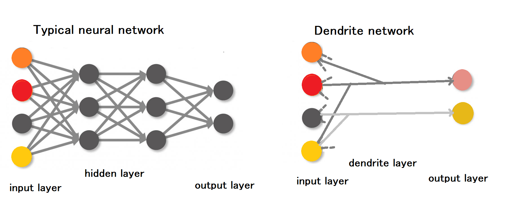
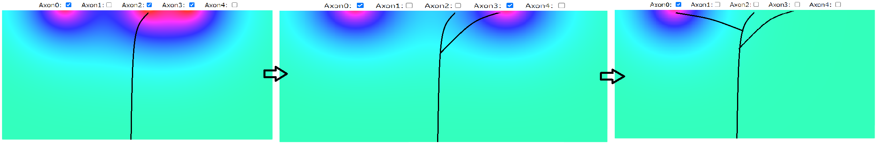
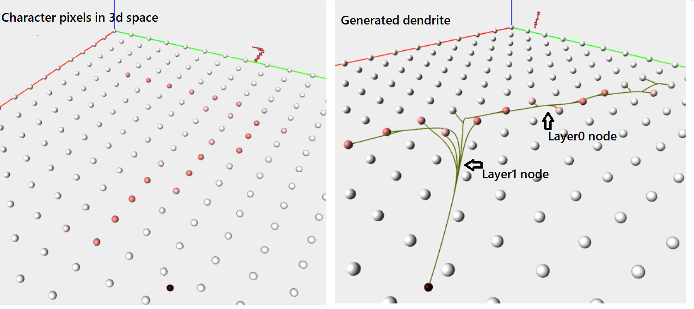
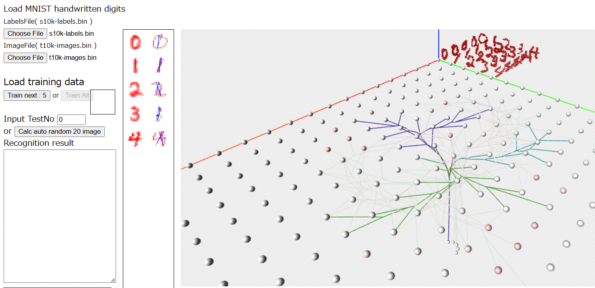
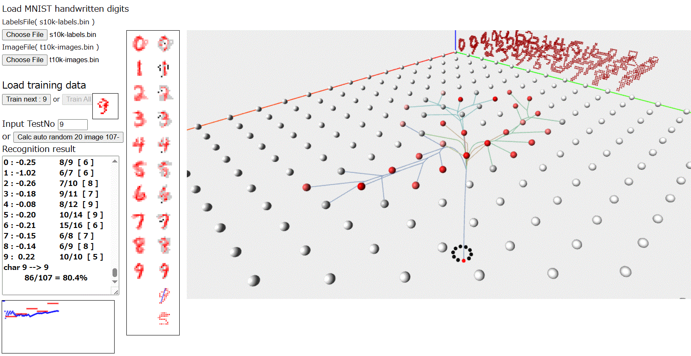

In the networks used for deep learning, synaptic connections in the hidden layers are structured
as one-to-many mappings. Therefore, generating an "appropriate probabilistic weight space"
for synaptic connections via backpropagation requires immense resources and time.
Biological neuronal networks are formed through many-to-one mappings; they lack a mechanism equivalent
to backpropagation and do not require vast amounts of training data.
Information is also stored in physical structures that branch out like the limbs of a tree.
Learning involves not only changes in synaptic connection strength but also the "de novo formation"
and "pruning" of these branches. Feedback and inhibition are also considered to play important roles in cognition.
However, the mechanisms controlling dendritic growth and the formation of connections remain completely unelucidated.
We hypothesized that a certain type of "spatial field" originating from axon terminals induces the formation of
dendrites, and we tested this hypothesis using "MNIST," a large-scale database of handwritten digits.
This program (GDN) automatically generates 10 neurons with dendrites that connect to MNIST digit patterns (0–9).
When characters to be recognized are presented, they output similarity scores based on mechanisms of excitation
and inhibition; if misrecognition occurs, the dendrites are regenerated.
GDN uses only five initial training samples per character; the recognition rate is initially around 50–60%,
but it reaches approximately 70% after about 50 trials.

The “spatial field” that attracts dendrites
Based on the following hypothesis, GDN automatically generates dendrites extending toward axon terminals.
a) An activated axon terminal forms a kind of dendritic attraction field around itself.
b) The strength of this field, like that of an electromagnetic field, follows the principle of
superposition and is inversely proportional to the square of the distance.
c) Dendrites extend from the “growth origin” (node) along the concentration gradient.
d) When the tip of a dendrite forms a synaptic connection with an upstream axon terminal,
an action potential flows into the dendrite, and the electric field it had been generating disappears.
e) When the terminal of an axon becomes inactive, the "field" shifts to one determined by other active terminals.
A new node then forms at the point where the field's intensity is greatest; from there, the axon "branches"
and begins to elongate once more.
f) Nodes can be classified into "Layer 0 nodes (synapse nodes)," which are generated in the vicinity
of synaptic connection points, and "Layer 1 nodes," which contain multiple Layer 0 nodes.
g) In other words, Layer 0 nodes are "leaves," and Layer 1 nodes are "branches."
The similarity of the tree shapes is the sum of the similarities of the individual "branches."
h) Learning involves the formation of new dendritic branches and the pruning of unnecessary ones.

MNIST image and dendrite network
The MNIST image dataset (t10k-images-idx3-ubyte) consists of 10,000 grayscale images, each 28×28 pixels in size,
with their centers of mass aligned.
GDN further converts these images into 14×14 two-dimensional arrays by adjusting the slant and height
of the characters.
Each pixel is also displayed as a sphere on the xy-plane of a three-dimensional space,
representing the axon terminal of a neuron connected to a visual receptor.
The GDN first uses the tip of the axon as a growth point to extend the dendrite in the direction of the
vector sum calculated across all image pixels.
The path is stored as a sequence of coordinates of the growth point.
When a dendrite reaches a pixel, a synaptic node is formed, and that pixel becomes inactive.
Since the total number of pixels constituting the character pattern decreases by one, the "field"
that attracts dendrites changes.
At this stage, there is only one dendrite.
Next, for all coordinates along the current path, the sum of vectors pointing toward the activated pixels is calculated.
The point where this value is maximized becomes the starting point for new growth (a node, or branch point).
In other words, a new "branch" is generated from this point.
This process is repeated until all pixels are in an inactive state. As a result, a single "digit" neuron
is generated, possessing dendrites that reflect the branching pattern of the target character.

Recognition
Once the "digit" neurons for 0 through 9 have been created, input the digit to be recognized.
A target character is randomly selected from the MNIST database—which contains 10,000 data items—
and its image is displayed to the right of the input field and on the x-y plane of a 3D space.
GDN compares each learned character with the target character using the following procedure.
a) If the pixels of the target character also exist on the pixels associated with a "digit" neuron,
the synaptic information reaches one of the nodes in Layer 1.< br>
If the pixel value is 0.2 or greater, it is added to the corresponding Layer 1 node array as
excitation information; if it is less than 0.2, it is subtracted as inhibition information.
b) If the pixels of the object to be recognized are not present on a "digit" neuron,
an inhibitory effect manifests as negative information at the nearest synapse node.
In this case as well, the values of the node array in Layer 1 are decremented.
c) Perform the above operation for all grid points and sum the values of the Layer 1 node array.
This becomes the output value from the cell body of each "digit" neuron.
d) The output value obtained from the object of recognition represents, so to speak, the sum of the
similarities of the "branches."
Synaptic information indicating that a "leaf" is absent from the learned position, or that the "leaf" is small,
causes the value of the Layer 1 node to decrease.
Even when a pixel exists at a position where a "leaf" would not normally be present, subtraction occurs
due to "suppression.”

The weighted sum of the ratios between the obtained Layer 1 nodes and the Layer 1 nodes of the learned characters
represents the similarity; the character with the highest value is the recognition result.
(The result is displayed in the text area.)
Learning Misrecognized Digits
The GDN first loads five training data sets, calculates the average of each pixel value,
and stores the results in a trained array.At this point, the basic structure of the digits has already been learned,
and the recognition rate is around 50%.
In the event of a misrecognition, the GDN “learns” by adding the pixel values of the misrecognized digit
to the existing array and recalculating the average. It then generates new dendrites.
This causes the branches to “forks” or “prune.” As a result, the range of recognizable “shapes” expands,
and the recognition rate rises to about 70% after approximately 100 trials (10 trials per digit).
Misrecognitions at this stage tend to occur with highly “abnormal” shapes. Although the GDN assigns
only one br to each digit, it appears that it must also assign neurons to these “abnormal” shapes.

How to use a dendrite network generation App for MNIST image recognition
---- We apologize, but the ZIP file is scheduled to be released soon. ----
i) Download GDN.zip and unzip it. Open GDN.html.
ii)Load the MNIST label file (t10k-labels.bin), and then load the image file (t10k-images.bin).
iii)Click the [Train 0..9] button. Five images of “0” will be loaded at random, and the generation
of dendrites will be displayed in an animation.
iv) Keep clicking until the character “9” is loaded, then finish the training. To automatically
generate characters from 0 to 9 without displaying the animation, click the [Train All] button.
v)When you enter a character to verify recognition or use the increase/decrease buttons,
the similarity scores and recognition results for characters 0 through 9 will be displayed
in the text area. The cumulative recognition rate is also displayed each time you run the test.
or
Click the [Automatically Generate 20 Random Images] button, wait a few seconds, and
the results for 20 randomly selected test characters will be displayed.